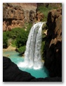

Annual Havasu Canyon 4-Day Trip
Nutshell | Short Description | Difficulty | Camping | Pack Horses | Helicopter | Saddle Horses | Supplies | Schedule Estimate | Directions to Trailhead | Miscellaneous | LinksNutshell
| Hike Name: | Havasu Canyon |
 |
| Location: | Grand Canyon | |
| When: | mid-May | |
| Difficulty: | Moderate | |
| Distance (round trip): | 20 miles | |
| Elevation Change: | 5,200 to 3,000 feet | |
| Time Estimate (round trip): | 4 days |
Short Description
The book 100 Hikes in Arizona says:Living for the past several centuries within this beautiful side canyon of the Grand Canyon, the Havasupai Indians are comfortably isolated from the maddening rush of the outside world. Adding to the Garden of Eden ambience of their home are the clear blue-green waters of Havasu Creek and the incredible waterfalls that are formed as the creek tumbles toward the Colorado River.
We do this hike in May since the water is usually clear then and it's warm enough to enjoy playing in the water. (The water turns a muddy color after a big rain.)
Difficulty
Steep Switchbacks in May Heat
We'll be hiking about 10 miles with over 2000 feet of elevation change on both Friday and Monday. The last mile or two of the hike out can be extremely difficult because it is up steep switchbacks with no water and often no shade from the sun, and it can be dangerously hot in May. You can do anything you want on Saturday and Sunday, including just rest and enjoy the beauty.
The book 100 Hikes in Arizona rates this hike as moderate and says:For the first mile the trail descends through a series of moderately steep switchbacks. It then continues to drop at a moderate grade for another 0.5 mile before reaching the canyon bottom. For the rest of the way the trail is either level or it descends along easy grade changes. Because the route is utilized by pack animals, it is well maintained and easy to follow.
To enjoy this hike, you'll need to be ready for the hike distance, elevation change, and May heat.
Distance and Route Finding
When hiking into the canyon, once you hear water, you should hike in the direction that the water flows. (The only regular route-finding mistake people seem to make is momentarily heading up the canyon that feeds Havasu Creek. You should instead hike down the creek toward the village of Supai.)
Here are some distance estimates.
| Hualapai Hilltop, our trailhead, to the Tourist Office in the village of Supai: | 8 miles |
| Supai to Havasu Falls and the campground: | 2 miles |
| Havasupai campground: | half mile of the creek |
| Optional hike from campground to Beaver Falls: | 3 miles (one way) |
| Optional hike from Beaver Falls to Colorado River: | 5 miles (one way) |
Optional Destinations
If you want to hike farther, a short distance after the campground is Mooney Falls:
Good views can be had from the rim of the drop-off, but to really experience this natural wonder, make the climb down to the base. This is achieved by passing through two crude tunnels and then descending a steep (and frightening) series of ladders and steps built by miners around the turn of the century. This descent is an adventure in itself.
Most campers don't go past Mooney Falls but, if you can deal with some rock climbing (a rope to hang onto is usually already there) and lots of wading (some deep), the hike/scramble/wade from Mooney Falls to Beaver Falls is another 2 miles. In 2012, a good ladder was at the most dangerous place on the standard route. As long as the ladder isn't damaged, it will allow more people access to Beaver Falls.
Add 4 or 5 more miles to go to the Colorado River. Some of our hard-core hikers hike from the campground to the Colorado River and back on Saturday, taking about 8 hours at a fast pace.
Dangers
Choose your campsite carefully. During our 2011 trip, some huge, dead trees fell over in the campground. As far as we know, no one was hurt, but dead trees could potentially kill a person. Stands of dead trees are one of the drastic changes flash floods can cause.
We have seen scorpions in the campground and on our tents at night, and we've also seen snakes on the trail during the day, so be aware that there are dangerous critters in the canyon. (We've never had any trouble with them.)
Although it seems like the bad flash floods haven't happened in May, remember to take note of the "High Ground" signs as you hike. These signs indicate the safest place to be during a flash flood.
Waterfalls can be deadly. People have died from the current pulling them over a waterfall. And people have died after getting caught in recirculating current or hydraulics at the bottom of a waterfall. (Canyoneers know that, if they have to jump near a waterfall, they should never jump into the "boiling" water at the bottom of a waterfall; aim outside the boiling.)
Don't assume that rope swings are safe. We've seen rope swing trees that have fallen. And on a past trip, one person in our party hurt his ankle after discovering a swing over an area with underwater rocks.
Don't assume that a place that was safe for jumping last year is safe this year. We have seen the creek change drastically between visits, and jumping is against Havasupai regulations.
Don't assume that if someone else succeeded, it's safe; in the past, people following other people jumping at one of the new falls, where people jump a lot, reported hitting bottom and sinking into muck.
The Colorado River is the destination for an optional, long day hike. Stay out of the Colorado River. Getting caught in the current of the Colorado near the confluence with Havasu Creek and surviving is very rare. The current is very strong there.
Camping
Camping Reservations
I will make camping reservations for everyone who promises reimbursement by the deadline. If the tribe charges me a deposit, you will lose your deposit if you back out of the trip and we can't find a replacement. Given enough time, I can often find a replacement. However, the closer it gets to the trip, the more likely it is that everyone has already made other plans for the trip dates, and thus I can't find anyone to take open spots.
Thursday Night
Thursday, the night before our trip down into the canyon, we will be camping near the trailhead in an open area off of the road. We will be camping with no facilities. Most people who've never camped on the rim don't realize how cold it can get on the rim at night. Be prepared for freezing cold on Thursday night. It'll be much warmer in the bottom of the canyon.
If you'd rather, you can choose your own place to camp Thursday night, make your own reservations to stay at a hotel in Seligman Thursday night, or drive out from Phoenix very early Friday morning, but please let me know your plans . People using pack horse spots will need to drop off their packs at Hualapai Hilltop before 10 a.m. Friday morning.
Village of Supai
The village of Supai has a post office, lodge, and general store, but they don't carry much, since everything gets into Supai on foot, by pack horse, or by helicopter.
The village also has a restaurant with a very limited selection of fast food type stuff. Sometimes the general store has ice. But don't count on everything in the village being open for business.
As you're walking through the village of Supai while hiking into the canyon, the Tourist Office will be on the left side before the store and restaurant. You might not see it if you're not looking for it. It will probably have a sign saying that you need to register to camp. This office handles camping and horse reservations and has a faucet outside for drinking water . You can fill up here for hiking in and out of the canyon.
As of 2011, each hiker should pick up his or her own permit in Supai before entering the campground. To get your permit, you must stop in at the Tourist Office to sign that you've read the Havasu Canyon Rules and Regulations (but don't pay!), and say that Kathy Sharp will be paying for your permit as part of her group. They will then give you a permit.
Campground
We will be camping at the campground in Havasu Canyon on Friday, Saturday, and Sunday nights. The campground has a spring, but the Indians have always recommended filtering the spring water.
The campground has some picnic tables and composting toilets. There are no showers.
Camping outside the campground is not allowed.
Optional Pack Horses
You can either do a true backpacking trip and carry all your camping and hiking stuff in and out of the canyon yourself, or you can get a spot for a pack or duffel bag on a pack horse.
If you use a pack horse, you'll still need a day pack for the hike in and out of the canyon.
We'll reserve pack horses to carry our stuff into the canyon Friday morning and out Monday morning. If you want to follow a different schedule, you'll need to reserve your own horses.
Pack Horse Fee Sharing
So that no one is stuck paying for a whole pack horse, I reserve pack horses for all the people who are in our group and following our schedule, whether or not they made their own camping reservation. We will average the cost of each pack horse spot, so everyone using pack horse spots equally shares the cost.
We need to reserve pack horses a week or two before the trip, so by then everyone must commit to the number of pack horse spots they want (including zero spots). Only when that is finalized can we determine the cost per pack horse spot.
Each pack horse can carry four 32-pound bags, but we have to reserve whole horses.
Here's a price example . Let's say each horse is $200 round trip, and we need 10 pack horse spots. One spot is 1/4 horse, so we'd need 2.5 horses. However, we can only rent whole horses, so we'd rent 3. That would turn out to be 3x$200/10=$60 per bag. (If we only needed 5 spots, the price would be 2x$200/5=$80.)
Pack Horse Bags
The tribe recommends internal frame packs or duffel bags for the horses. I use those green canvas army-surplus-look bags that just have an opening at one end; it can be a real chore to carry them from the campground entrance to our chosen campsite, though.
Pack and weigh your pack horse bags before the trip! Sometimes the tribe weighs packs for pack horses at Hualapai Hilltop, and sometimes they don't. Sometimes the scale looks good, and sometimes it doesn't.
You should probably aim for 30 pounds or less.
If, say, you're using two pack horse spots, a combination of a 20-pound and a 40-pound pack is NOT allowed. You'll have to rearrange the contents.
Label packs or bags to be put on pack horses with " KATHY SHARP " in big letters. Make sure your bag and label will be able to stay together for a long, bumpy ride tied onto a horse.
Pack Horse Schedule
Our group just drops off their bags with the person who is manning the trailer and weighing bags at Hualapai Hilltop, right before starting the hike. Make sure all our bags are piled in one pile, separate from other piles! Unfortunately, the time the person arrives to work at the trailer varies widely. (We have occasionally had to just leave our bags at the trailer with no one there, but it's better not to do that.) Everyone usually starts hiking whenever they get to the trailhead, after dropping off their bags, since the trailhead is not the most pleasant place to hang out (lots of cars, dusty, and horsey).
For the trip down into the canyon, you must drop off your pack horse bags at Hualapai Hilltop by 10 a.m. The bags will be dropped off at the entrance to the campground by about 3 p.m. (Schedules are not real tight in Havasu Canyon.)
For the trip up out of the canyon, you must drop off your pack horse bags at the campground entrance by 7 a.m. They should arrive at Hualapai Hilltop by about noon.
One year, some of our packs did not arrive at the hilltop, and some valuables were missing when the owners finally got their bags days later. I think that problem was a fluke, but to help avoid it, let's make sure we all pile all our packs in one big pile at both ends of the hike.
Reducing Hike Distance
Helicopter
For a fee, a helicopter can fly you between Hualapai Hilltop and the village of Supai. You'd then have to hike about two miles to or from the campground.
The helicopter company sometimes changes from year to year, but usually helicopter rides are available on Thursdays, Fridays, Sundays, and Mondays, conditions permitting .
Normally, you cannot make helicopter reservations. The morning you want to fly, if the helicopter is flying, you sign up and wait for your turn. However, other people, like tribe members, get to fly first. It's a very quick flight, not a sight-seeing flight.
Note that some days the helicopter is unexpectedly grounded for repairs or dangerous conditions such as high winds.
The "Quick Details and FAQs" on the Havasu Canyon links page or the tribe's website might have more information about helicopter rides.
Saddle Horses
You might be able to find information about riding horses in or out of the canyon at the tribe's website .Supplies
Bring extra warm blankets, a ski jacket, warm pants, hat, and gloves for the rim-camping (first) night. Sometimes, not always, it is extremely cold on the rim the night before our trip, even in mid-May.Bring light fleece for other nights. Keep an eye on the weather forecast. When we've done this trip in mid-May in past years, no cold weather gear other than, say, a packable windbreaker was necessary in the canyon.
Bring camping gear and your own food for four nights and four days. Many people estimate that they need quite a bit more food than they use; try to be realistic with your quantities. I suggest making everything as light weight and minimal as possible; the weight really adds up. For example, I'd recommend dried noodles, backpacker's meals (the Mountain House brand meals are pretty good), dried milk, powdered drinks, and oatmeal over food in glass containers, canned foods (usually heavy due to liquid), etc. And make sure everything you need to take to the canyon campground fits in your pack before Thursday!
Bring a small camp stove. Open fires are not allowed.
Bring garbage bags ; you will have to pack out all your own garbage, and you'll probably want to double-bag it for the hike out of the canyon. (If pack horse space isn't too tight, we might be able to put some of the backpacker's trash in the pack horse bags, but it needs to be packed well so as not to get on anything else during the long, bumpy pack horse ride.)
Bring something to hang your food with to keep aggressive campground squirrels and dogs out of your food and toiletries.
Bring wading shoes and hiking shoes. On one trip I wore my feet raw hiking to Beaver Falls in sandals. Sand stuck to the wet straps and became sandpaper. I suggest wearing socks if your wading shoes are sandals.
Carry at least 2 quarts or liters of water for the trip down and at least 3 for the trip out of the canyon.
If you're expecting a hot, sunny day for your hike out of the canyon, you might want to carry some extra water to pour on your head while you're hiking up the final switchbacks.
If you have a water filter and iodine tablets, bring them. If you don't, consider getting them, borrowing while you're in the canyon, or taking your chances with the spring water. The tribe recommends filtering the spring water. (Some of us drank directly from the spring on past trips and no one had any problems of which I'm aware.)
Bring your FRS radios if you have them. At least some people will be able to communicate on the trail and between vehicles during the caravan up to the trailhead. We use channel 9 , code 1 .
Don't forget extra batteries for your radios and flashlights or headlamps .
You should probably bring extra socks, a hat, and Moleskin . (Kathy prefers athletic tape over Moleskin.)
Most first-timers say in retrospect that they brought far too much weight in clothing. We'll all be wearing dirty clothes. Be a minimalist!
Bring a cool, light-colored shirt for hiking up the switchbacks in the hot sun on Monday.
Bring light weight rain gear .
Bring biodegradable soap or shampoo.
Bring toilet paper. Sometimes the toilets have some T.P. but never enough for the whole four days.
Bring ear plugs if you have trouble sleeping with people noise, road noise, etc.
Bring a day pack or fanny pack , something to swim in , and possibly a towel (camp towel?) for the hikes to the waterfalls in the canyon.
A water bag for hanging in a tree is nice for washing.
Sometimes mosquitos can be pesky at dusk, so bring bug repellent , but be careful not to get it on your camping gear. (Most bug repellents can damage certain synthetic materials.)
A walking stick can be extremely helpful for keeping your balance while wading in the creek.
In the past I have brought a waterproof camera , a waterproof case for my camera, or both. Now I have a digital waterproof camera. Don't forget film or camera batteries if your camera needs them.
I usually hike to Beaver Falls and the Colorado River on Saturday. You don't have to. For this optional hike, I plan to bring:
- quick-drying clothing (no cotton) for wading or swimming, such as nylon river shorts and a Cool Max shirt. Later in the day, if your clothes don't dry quickly, you can get extremely cold in the wind or shade of the canyon, so have a non-cotton option to wear.
- shoes that can do double duty for both hiking and wading. Changing shoes for every creek crossing does not work.
- drybag to keep my stuff dry. I put mine inside my pack to avoid damaging it while bushwhacking. This hike, especially the part near the Colorado River, has killed electronics and soaked lunches on past trips. Don't rely on plastic bags and garbage bags to keep your stuff dry during deep wades or swimming. Test your drybag before the trip to make sure it is watertight when completely submerged. If you don't have a drybag, see if you can put your sensitive stuff in someone else's drybag during the deep wades or swims, keeping in mind that hikers often get separated. (That is, don't let someone hike away with stuff you need.)
- water filter, biodegradable soap (we sometimes wash up at Beaver Falls or the grotto waterfall), camp towel, comb, deodorant, and full dayhike supplies including lunch and map.
You might want to leave some drinks and snacks in your vehicle for after the hike out Monday. What you leave in the car will probably get pretty hot, though. Sometimes someone sells cold drinks in the parking lot.
At the bottom of this page are links to generic lists of backpacking supplies and day-hiking supplies .
Again, try out your loaded backpack before Thursday!Schedule Estimate
If you will not be meeting with us Thursday afternoon, please let Kathy know.
Tuesday and Wednesday- Make sure that everything is packed. If you haven't done this sort of trip before, I can guarantee you that getting everything packed will take a lot longer than you think! Making everything fit may be a challenge. If you're using a pack horse, weigh your loaded pack horse bag.
- 16:00 Get gas, and eat dinner or grab something to eat during the ride.
- 16:45 Meet at the Happy Valley Towne Center and set up the carpools and radios. Park along the west edge of the lot at the northeast corner of I-17 and Happy Valley Rd. )
- 17:00 Leave promptly to drive to our campsite. Don't count on us waiting past this time. On past trips we waited for people who never showed up. We don't have time for that!
- 22:00 Set up camp.
- 06:00 (or earlier): Rise and shine; eat breakfast and break camp.
- 08:00 (or earlier) till 10:00: Meet up with a group at the trailhead, drop off packs for pack horses, and head down to the campground. I see no reason for all of us to start hiking together; the fast hikers will lose everyone anyway, and they'll get down early to pick a good campsite for us all. No one should hike alone , even if that means you need to stay near people you don't know.
- Relax and play.
- Relax and play.
- Each carload of people can decide when they want to start hiking and can head back for Phoenix when they get to the top. If people want to caravan back to Phoenix, we can arrange for that, but be aware that people finish the hike hours apart. (Some people get up at 3 a.m. in the hope of making it to the switchbacks before all the shade is gone. The pack horses usually get to the hilltop hours later than those hikers.)
- Often a group of us stops at Westside Lilo's Cafe on the south side of the main drag in Seligman for lunch. One year, a group went to visit Grand Canyon Caverns on Monday.
Directions to Trailhead
Don't forget to print directions to the campsite and trailhead and bring them with you.
There are multiple ways to get to the trailhead (some are posted on the Havasu Canyon links page ), but Kathy normally uses the following directions from Phoenix to Hualapai Hilltop. (The Prescott route requires driving on two-lane highways, where it's easy to lose members of the driving caravan waiting to pass vehicles.)
- Go North on I-17 to I-40 (exit 340B, about 125 miles to Flagstaff)
- Go West on I-40 to State Rte 66 (about 70 miles to Seligman)
- Go West on State Rte 66 (to near mile marker 111)
- Go North on Tribal Road 18 to Hualapai Hilltop (about 60 miles)
You should see a sign that says "Hualapai Hilltop" or "Supai" or something like that at the point where you should turn off of Route 66 onto Tribal Road 18. From Route 66 to Hualapai Hilltop, our trailhead, is 63 miles northeast on Tribal Road 18. The trail starts at the end of the road.
We see lots of elk, cattle, and rabbits on TR18. Be careful driving there, especially at night!
Directions to Campsite: This final stretch of road, TR18, goes through another Indian reservation. At some point after we exit the Hualapai Indian Reservation, and within 10 miles of the end of the road, we should find our Thursday-night campsite. The turn-off is difficult to spot unless you're really looking for it. It's on the right as you're heading down Tribal Road 18 to the hilltop, between mile markers 52 and 53; it's a sharp turn. (You'll actually turn back toward the direction you came, slightly.) Deb provided some more details: The turn-off for the campsite road is only 50 feet past mile marker 52 ; slow down at mile marker 51 and watch your odometer. As soon as you see mile marker 52, you'll find the road on your right in 50 feet. Also, be aware that when we left in 2005, wind had blown down mile marker 52. Shortly after you turn off Tribal Road 18, take the left fork in the dirt road . Park in the large, open area that has obviously been used for lots of camping. The rim camp GPS coordinates are lat=36.056264, lon=-112.690137 .
The Hualapai Hilltop trailhead is at the end of TR18.
Passenger cars should be fine for this trip, but high clearance is preferable. You never know how dirt roads are going to be from one year to the next. Only the short road to wherever we camp Thursday night is dirt.
I would like for us all to caravan to the trailhead together if possible so that no one can get stranded with car problems along the way. With multiple vehicles going on a trip, we have no excuse for letting anyone get stranded.
The caravan doesn't work well if the cars don't stay close together. If someone is trailing behind in the dark and gets out of radio distance or doesn't have a radio, there's not much we can do. It's hard to tell whose headlights those are way back in the distance. If you want to participate in the caravan, we'll have to agree on a top speed and a lead driver who will stick to the agreed-upon speed.
We might want to have a place to meet up somewhere along the way, such as the Texaco on the north side of I-40 about 11 miles west of I-17. It's a good meeting place and has a couple fast food counters, but the gas is expensive. We've also regrouped on Route 66 in Seligman at the Mustang gas station, which has had relatively lower gas prices considering the remoteness.
The driving is 300 miles one way, and the last 60 miles is slow (although Kathy noticed in 2012 that many of the slowest speed limit signs on TR18 were gone).
How to Sign Up
I usually try to make reservations as soon as the tribe starts accepting them, which is usually in January or February. Sometimes it's easy, and sometimes it's a chore. (Sometimes the tribe doesn't answer the phone for hours or days on end, either because the phone lines are down or no one is in the office.)
To sign up for this trip, send me an email in early January or check with me to see if any openings are available.
Note that, by signing up, you are committing to reimburse Kathy whether you go on the trip or not.
Once you're a member of our group, I should email you the link to the participant list. Verify that you're on the list (to keep me honest).
Members of our hiking group have unintentionally broken Havasupai laws on past trips. There will be no excuse this year! To go on this hike, you MUST read and agree to the Havasu Canyon Rules and Regulations , which you'll sign at the Havasupai Tourist Office.
Even if you're not using a pack horse, please let me know how many pack horse spots you want by two weeks before the trip. I'll make the pack horse reservations for everyone, so we can split the costs.
Google Docs
You aren't required to use Google Docs if you don't want to, but lately I've been using Google Docs to let trip participants collaborate without using me as a middle man. You could just give all your information to me, but you wouldn't see what other people might contribute.
I usually start out with one file, which is the spreadsheet where I list all the participants, how many pack horse spots they want, and whether they've paid.
Later on, I usually create pages for things like letting participants organize their own carpools. If you send me your name, carpooling information , and how to contact you, I can add it for you so everyone can use that to find carpoolers. (The information can be, for example, that you need a ride with someone or that you have room for a passenger.) Don't forget that you need room for everyone's gear , as well as all the passengers.
We can also collaborate on other sharing information (water purifiers, tent space, stove, etc.).
Miscellaneous
Keep an eye on the weather before the trip. It'll be much cooler on the rim Thursday night than it will be at the campground in the canyon. Although Seligman and Peach Springs are pretty far away and at a different elevation, you might check their weather for for Thursday night. You can check the weather for Supai to see what it should be like while we're in the canyon.
In 2012, I asked in the Tourist Office what the tribe calls the new falls. (They have a photo in the office.) Their name for what we've been calling "Rock Falls" is " Little Navajo " and their name for "New Navajo" for English speakers is " 50 Foot ." He said the Havasupai name but I didn't even try to learn it. ;-)
We caught some dogs chewing holes in our packs while we were playing at a waterfall. Beware of hungry critters when you leave your pack somewhere!
We encourage anyone who goes on one of our hikes to write a trip report. You can write anything you like and as little or as much as you like. We really need some new authors! Just e-mail your report to me.
--Kathy
Links
What to Bring
for Hiking
Optional
Supplies for Pack
Backpacking
Supplies
Havasu Canyon
Links